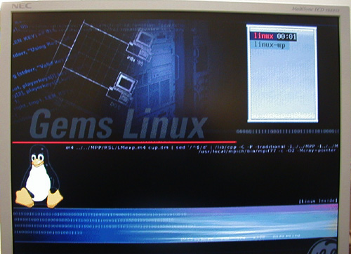
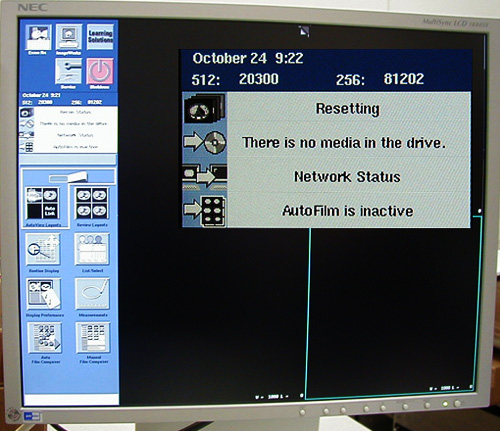

Proprietary to General Electric
Direction 2378260-800, Rev# 10
GOC3 Service Methods (Adv)
Proprietary to General Electric |
| NOTE: | For a scalable PDF version of the Application Startup Flowchart, click on the icon below: |
Media File 1: Application Startup Flowchart

When the system is Powered ON, the BIOS Boot process occurs. The following events occur:
System is Powered ON.
At approximately 10 seconds, the HP Invent screen appears.
At approximately 20 seconds, text appears on the screen.
At approximately 30 seconds, the SCSI inventory begins followed by low level tests.
At approximately the 1 minute mark, the GEMs Linux screen appears. Refer to Illustration 1.
Illustration 1: GEMs Linux Screen

The Linux load begins and retests start.
At this stage, no diagnostics can be performed from the Online Center.
If problems occur, an FE on-site can perform the following troubleshooting actions:
Listen for beeps.
Check the LEDs on the HP.
Look for the SCSI devices in the inventory.
If a new install, check the cables on the HP.
Attempt a Load from Cold (LFC).
If the LFC fails, replace the HP.
Once the Bios Boot completes and the Linux Load begins, the following events occur:
At approximately 1 minute mark (after Power ON), the GEMs Linux screen appears. The Linux load begins and retests start.
At approximately 1 min 45 seconds, the extended tests begin.
OK should appear after all tests.
| NOTE: | A FAILED message is not necessarily a hardware problem. It can be due to incorrect configuration or facility network issues. |
At approximately 2 min 40 seconds, the extended tests finish and the following message appears: Starting Darc Power.
At this stage, no diagnostics can be performed from the Online Center.
If problems occur, an FE on-site can perform the following troubleshooting actions:
Listen for beeps.
Check the LEDs on the HP. (For more information see HP Host Diagnostics.)
Look for the SCSI devices in the inventory.
If a new install, check all the cables on the HP.
Reboot to repeat the extended tests. Closely monitor the tests to ensure that nothing fails.
Attempt a Load from Cold (LFC).
If the LFC fails, replace the HP.
At approximately 3 min 10 seconds (after Power ON), a pink message box appears on the left-hand monitor. The message indicates you have 10 seconds to abort boot up.
At approximately 3 min 20 seconds, the message in the pink box changes to OC initializing.
Recon initializes. On the right-hand monitor, check Recon status messages: Resetting (1-2 min), Complete, Idle. Refer to Illustration 2.
At approximately 5 minutes 45 seconds, the startup process completes.
Illustration 2: Recon screen

At approximately 3 minutes (after power up), command line diagnostics can be performed from the Online Center. For more information see GOC3/GOC4 Command Line Diagnostic Tests (adv).
If problems occur, an FE on-site can perform command line diagnostics as needed. For more information see GOC3/GOC4 Command Line Diagnostic Tests (adv).